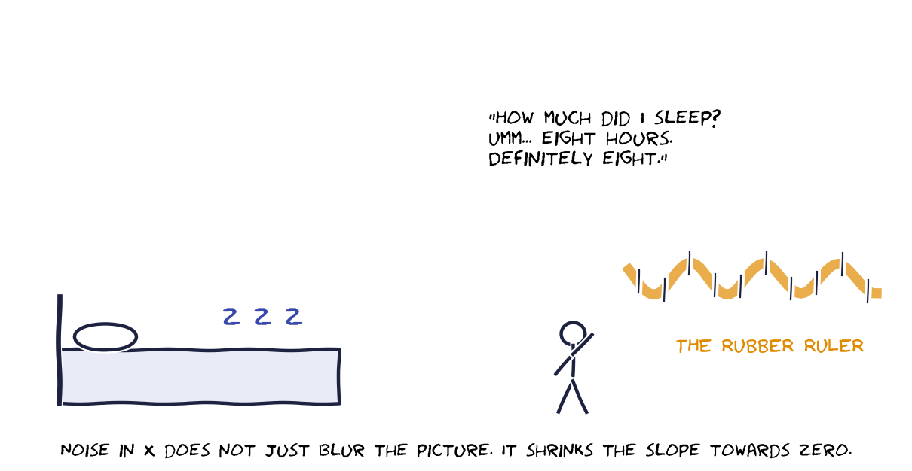
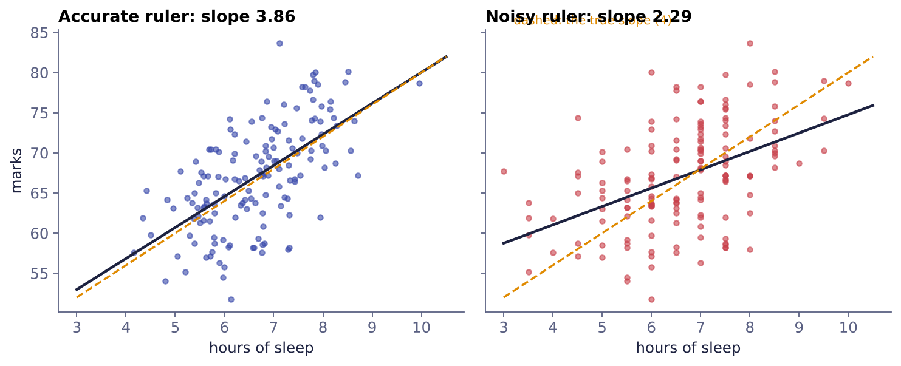

The Noisy Ruler: Measurement Error, a Nobel Laureate, and the Roommate Who Saved the Day
Ask a student how many hours they slept last night and you will get an answer. You will not necessarily get the truth. People round, forget, guess, and sometimes tell you what sounds respectable.
What happens to a regression when the X variable is measured with a rubber ruler? The answer is one of the most important, and most ignored, results in econometrics. It also helped win a Nobel Prize.
Part II · Foundations · Chapter 4 of 9
1. Omitted variables · 2. Spurious regression · 3. R-squared · 4. Measurement error · 5. Heteroskedasticity · 6. Autocorrelation · 7. Dummy variables · 8. Structural breaks · 9. Multicollinearity
Data: blog_datasets.xlsx, sheet P4_measurement · Simulated cross-section, 150 students · EViews program
Download this chapter's data: P4_measurement.xlsx

Milton Friedman and the mystery of the shrinking spending
In the 1940s and 1950s, economists had a puzzle. When they compared households at one moment, richer families spent a much smaller share of an extra rupee (or dollar) than the Keynesian theory predicted. The estimated marginal propensity to consume looked strangely low. Yet over the long run, national consumption grew almost one-for-one with national income.
In 1957, Milton Friedman offered an explanation in A Theory of the Consumption Function. People decide how much to spend based on their permanent income, what they expect to earn on average over the years. But what we observe is measured income: permanent income plus a transitory part, such as a bonus this year or a bad harvest.
From the point of view of a regression of spending on income, the transitory part is measurement error in the variable that really matters. And measurement error in X does something very specific: it pulls the slope towards zero. Friedman's permanent income hypothesis was one of the contributions cited when he received the Nobel Prize in Economics in 1976.
This post shows exactly why the slope shrinks, how much, and how to fix it.
Two rulers, one truth
A college runs a small study on 150 students. For each student we have:
- MARKS: the end-of-term mark
- SLEEP_TRACKER: average nightly sleep, measured by a wrist tracker (accurate)
- SLEEP_SELF: the sleep the student says they get, rounded to the nearest half hour (noisy)
- SLEEP_ROOMMATE: the roommate's estimate of the student's sleep, also rounded, also noisy, but with independent mistakes
The true rule I used to build the data: every extra hour of sleep adds 4 marks.

First, the accurate ruler. ls marks c sleep_tracker
Dependent Variable: MARKS
Method: Least Squares
Date: 10/27/26 Time: 21:45
Sample: 1 150
Included observations: 150
==============================================================================
Variable Coefficient Std. Error t-Statistic Prob.
==============================================================================
C 41.38483 2.723096 15.19771 0.0000
SLEEP_TRACKER 3.863301 0.405631 9.524171 0.0000
==============================================================================
R-squared 0.380000 Mean dependent var 67.00933
Adjusted R-squared 0.375811 S.D. dependent var 6.514891
S.E. of regression 5.147130 Akaike info criterion 6.127999
Sum squared resid 3920.956 Schwarz criterion 6.168141
Log likelihood -457.5999 Hannan-Quinn criter. 6.144308
F-statistic 90.70983 Durbin-Watson stat 2.008383
Prob(F-statistic) 0.000000
==============================================================================
An estimate of 3.86, close to the true 4. Notice the R-squared of only 0.38, even though this is the correct model (R-squared Is Not a Report Card said this would happen).
Now the noisy ruler. ls marks c sleep_self
Dependent Variable: MARKS
Method: Least Squares
Date: 10/27/26 Time: 21:45
Sample: 1 150
Included observations: 150
==============================================================================
Variable Coefficient Std. Error t-Statistic Prob.
==============================================================================
C 51.88233 2.427215 21.37525 0.0000
SLEEP_SELF 2.287350 0.359979 6.354114 0.0000
==============================================================================
R-squared 0.214332 Mean dependent var 67.00933
Adjusted R-squared 0.209024 S.D. dependent var 6.514891
S.E. of regression 5.794139 Akaike info criterion 6.364815
Sum squared resid 4968.663 Schwarz criterion 6.404956
Log likelihood -475.3611 Hannan-Quinn criter. 6.381123
F-statistic 40.37477 Durbin-Watson stat 2.053054
Prob(F-statistic) 0.000000
==============================================================================
The effect of sleep has shrunk from about 4 to 2.29. It is still "highly significant", so nobody reading the table would notice. But the estimate is wrong by more than 40%.
Why the slope shrinks: the derivation
The self-reported number is the truth plus noise: \(x_i = x_i^* + w_i\), where \(x^*\) is true sleep and \(w\) is a reporting error that is independent of everything else, with variance \(\sigma_w^2\). The true model is \(y_i = \beta_0 + \beta_1 x_i^* + u_i\).
Derivation: the attenuation formula (click to open)
The OLS slope from regressing \(y\) on the noisy \(x\) is, in large samples,
The numerator: \(\operatorname{Cov}(x^* + w,\ \beta_0 + \beta_1 x^* + u) = \beta_1 \operatorname{Var}(x^*)\), because \(w\) and \(u\) are independent of everything else.
The denominator: \(\operatorname{Var}(x^* + w) = \operatorname{Var}(x^*) + \sigma_w^2\).
So
Since \(\lambda\) is between 0 and 1, the estimate is pulled towards zero. Statisticians call \(\lambda\) the reliability ratio.
In words: OLS cannot tell the real differences in sleep (which move marks) from the reporting noise (which moves nothing). It averages a real effect with a fake zero.
In our data, the tracker's variance is 1.08 and the self-report's variance is 1.74, so \(\lambda \approx 1.08 / 1.74 = 0.62\). Then \(4 \times 0.62 \approx 2.5\), close to the 2.29 we got. Econometricians call this attenuation bias.
A twist: noise in Y is far less harmful
If the marks had been recorded with random errors instead, the slope would still be unbiased. The extra noise would just join the error term \(u\), making standard errors bigger and R-squared smaller. Noise in Y costs you precision. Noise in X costs you the right answer.
Fix 1: put bounds on the truth (Frisch's trick)
An old idea, which goes back to the work of Ragnar Frisch in the 1930s (we will meet him properly in Two Friends Who Always Arrive Together), lets you put bounds on the true slope. Regress Y on X and you get a slope that is too small. Regress X on Y and take the reciprocal, and you get one that is too large (if Y is measured precisely enough). Here, regressing SLEEP_SELF on MARKS gives 0.0937, whose reciprocal is 10.7. So the truth lies somewhere between 2.29 and 10.7. True, but a wide range. The true value, 4, is inside.
Fix 2: instrumental variables, with a little help from the roommate
The cleverest fix needs a second, independent measurement of the same thing. The roommate's estimate is noisy too, but the roommate's mistakes have nothing to do with the student's own mistakes. That is exactly what an instrumental variable needs:
- Relevance: the roommate's estimate must be correlated with the student's reported sleep.
- Exogeneity: it must be unrelated to the student's reporting error and to everything else that affects marks.
Abraham Wald proposed a version of this idea in 1940, in a paper on fitting straight lines when both variables are measured with error. (Yes, the same Wald of the Wald test, and the Wald who, during the Second World War, advised the US military to armour the parts of returning bombers that showed no bullet holes, because planes hit in those places never came back.)
Stage 1: is the instrument relevant?
ls sleep_self c sleep_roommate
Dependent Variable: SLEEP_SELF
Method: Least Squares
Date: 10/27/26 Time: 21:45
Sample: 1 150
Included observations: 150
==============================================================================
Variable Coefficient Std. Error t-Statistic Prob.
==============================================================================
C 2.712703 0.408936 6.633568 0.0000
SLEEP_ROOMMATE 0.584510 0.059963 9.747879 0.0000
==============================================================================
R-squared 0.390999 Mean dependent var 6.613333
Adjusted R-squared 0.386885 S.D. dependent var 1.318616
S.E. of regression 1.032498 Akaike info criterion 2.915083
Sum squared resid 157.7758 Schwarz criterion 2.955225
Log likelihood -216.6313 Hannan-Quinn criter. 2.931392
F-statistic 95.02114 Durbin-Watson stat 2.141734
Prob(F-statistic) 0.000000
==============================================================================
The roommate's estimate predicts the self-report strongly: t = 9.7, F = 95. A common rule of thumb asks for a first-stage F above 10; we are far above it. The instrument is strong.
Stage 2: two-stage least squares
Quick → Estimate Equation, choose method TSLS, equation marks c sleep_self, instrument list sleep_roommate (command: tsls marks c sleep_self @ sleep_roommate).
Dependent Variable: MARKS
Method: Two-Stage Least Squares
Date: 10/27/26 Time: 21:45
Sample: 1 150
Included observations: 150
Instrument specification: SLEEP_ROOMMATE
Constant added to instrument list
==============================================================================
Variable Coefficient Std. Error t-Statistic Prob.
==============================================================================
C 42.19522 4.045433 10.43033 0.0000
SLEEP_SELF 3.752134 0.607040 6.181032 0.0000
==============================================================================
R-squared 0.126436 Mean dependent var 67.00933
Adjusted R-squared 0.120534 S.D. dependent var 6.514891
S.E. of regression 6.109656 Sum squared resid 5524.529
F-statistic 43.09211 Durbin-Watson stat 2.102053
Prob(F-statistic) 0.000000 Second-Stage SSR 4898.009
J-statistic 0.000000 Instrument rank 2
==============================================================================
The IV estimate is 3.75, much closer to the true 4 than OLS's 2.29. The standard error is larger (0.61 against 0.36): IV pays for its honesty with less precision. That is almost always the trade-off.
Is the measurement error really there? The Hausman test
Jerry Hausman's 1978 Econometrica paper "Specification tests in econometrics" gave us a general principle: if OLS and IV give very different answers, OLS is in trouble. The easy regression version (often called Durbin-Wu-Hausman):
- Run the first stage as an equation called EQ4F and save its residuals (
eq4f.makeresids resid_fs). - Add those residuals to the original regression. If their coefficient is significant, the regressor is "endogenous", here meaning contaminated by measurement error.
ls marks c sleep_self resid_fs
Dependent Variable: MARKS
Method: Least Squares
Date: 10/27/26 Time: 21:45
Sample: 1 150
Included observations: 150
==============================================================================
Variable Coefficient Std. Error t-Statistic Prob.
==============================================================================
C 42.19522 3.708718 11.37731 0.0000
SLEEP_SELF 3.752134 0.556514 6.742210 0.0000
RESID_FS -2.405227 0.713128 -3.372786 0.0010
==============================================================================
R-squared 0.270764 Mean dependent var 67.00933
Adjusted R-squared 0.260843 S.D. dependent var 6.514891
S.E. of regression 5.601128 Akaike info criterion 6.303611
Sum squared resid 4611.778 Schwarz criterion 6.363823
Log likelihood -469.7708 Hannan-Quinn criter. 6.328073
F-statistic 27.29048 Durbin-Watson stat 2.017974
Prob(F-statistic) 0.000000
==============================================================================
RESID_FS has a t-statistic of −3.37, p = 0.001. We reject exogeneity. Measurement error is real and OLS cannot be trusted. Notice also that the coefficient on SLEEP_SELF in this regression is 3.752, identical to the IV estimate. That's not a coincidence; it's the "control function" view of IV. (EViews also offers this test directly: in the TSLS equation, View → IV Diagnostics → Regressor Endogeneity Test.)
Summary
| Method | Slope | What it tells us |
|---|---|---|
| OLS with the accurate tracker | 3.86 | The benchmark (true value 4) |
| OLS with self-reports | 2.29 | Attenuated by noise |
| Reverse regression, inverted | 10.7 | An upper bound |
| IV with the roommate's estimate | 3.75 | Close to the truth, less precise |
The lesson
A small, significant coefficient does not prove the effect is small. It may be a big effect seen through a foggy window. When your X is a survey answer, a proxy or a rough estimate, expect attenuation, and look for a second independent measurement to use as an instrument.
Something to think about
Studies often find that the measured return to an extra year of schooling is modest. Years of schooling are usually self-reported. Which way would that bias the estimate? Now think of a reason why the bias could go the other way (hint: Does Ice Cream Drown People?). Some famous studies used twins as "instruments". Why might twins help? Answer in the comments.